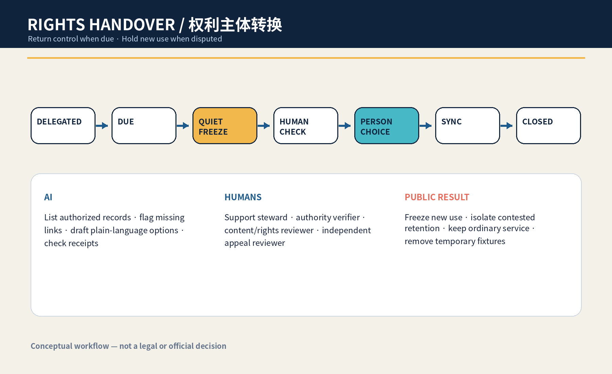
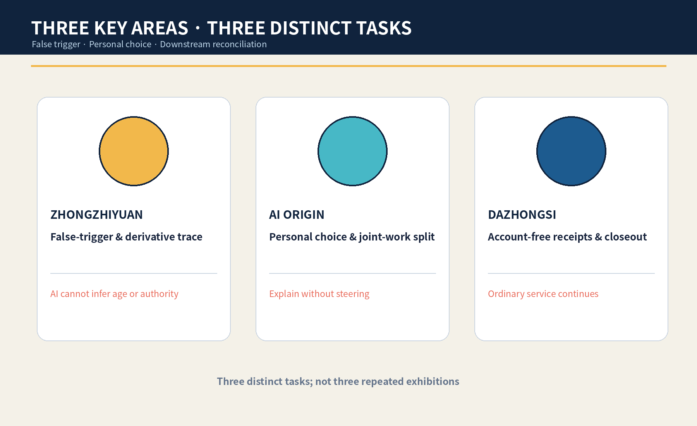
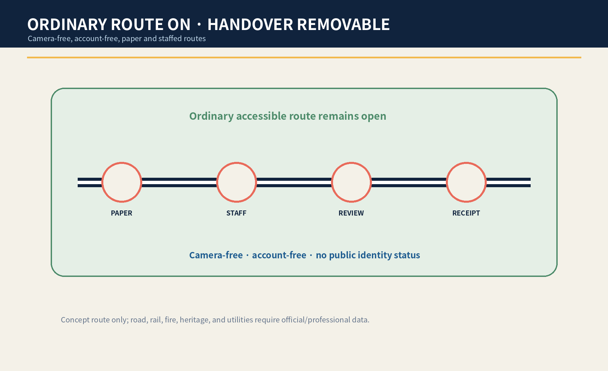
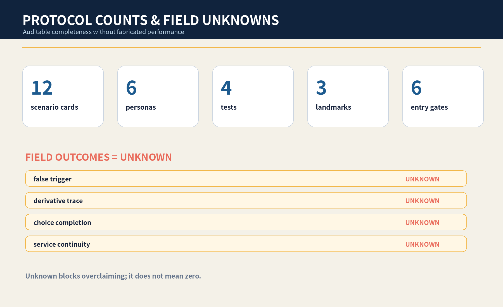

Status boundary: This is a concept for professional and affected-person co-design, not legal judgment, official planning, implementation commitment, or a real service result.
Overview Map and Three Scope Levels

Core Metrics
11.41 km²Internal calculation from provisional rough polygons; not official area
20.0%Internal calculation from provisional rough polygons; not official area
20.9%Internal calculation from provisional rough polygons; not official area
12 / 6 / 4cards / personas / tests
Seven-State Protocol and Human Decisions
DELEGATED→DUE→QUIET_FREEZE→HUMAN_CHECK→PERSON_CHOICE→SYNC→CLOSED
Named Roles
- Young-Person Support Steward — explains the inventory and records the person's choice without steering it
- Identity and Authority Verifier — checks the trigger and authority conflict without asking AI to infer age or capacity
- Content and Rights Reviewer — separates joint authorship, lawful retention, public display, and derived-use questions
- Independent Appeal Reviewer — may hold or reverse a transfer, publication, deletion, or continued-use decision
Six Entry Gates
- G1 A plain-language footprint inventory exists and names every known copy and derivative.
- G2 A named human has verified the trigger and the authority to act; AI has not inferred age or capacity.
- G3 New personalization, public display, and derived use are physically or logically frozen before review.
- G4 Joint creators, legal retention, safety, and contested authority have separate hold paths.
- G5 The person can choose continue, limit, export, correct, withdraw, or dispute through staffed and paper routes.
- G6 AI-off processing, downstream synchronization, and independent appeal all pass synthetic rehearsal.
AI Scenarios and Task Coverage
Agent.1–Agent.6 each has a dedicated output; one task model generates 12 cards, 6 personas, 4 tests, and 3 landmarks.

Land Use, Slow Mobility, and Blue-Green Public Space
Geometry supports concept relationships, internal calculations, and topology checks. Buildings and renewal projects express removable service envelopes and phasing only; real parcels, buildings, roads, rail, utilities, heritage, property, capacity, and investment await official data and professional judgment.

Sources, Assumptions, Self-Check Status, and Exit
- Sources: announcement, cleared Taskbook, central registry, and local standards snapshots. International cases are background only.
- Assumptions: transition point, authority, joint creation, retention, deletion, and derivatives require professional confirmation.
- Self-check status: the four-gate result is authoritative only in self_check.json; this page does not claim passage.
- Privacy: synthetic data only; no biometrics, real personal files, or public identity status.
- Exit: any failed gate freezes new use, removes temporary fixtures, and keeps ordinary learning and public service available.
